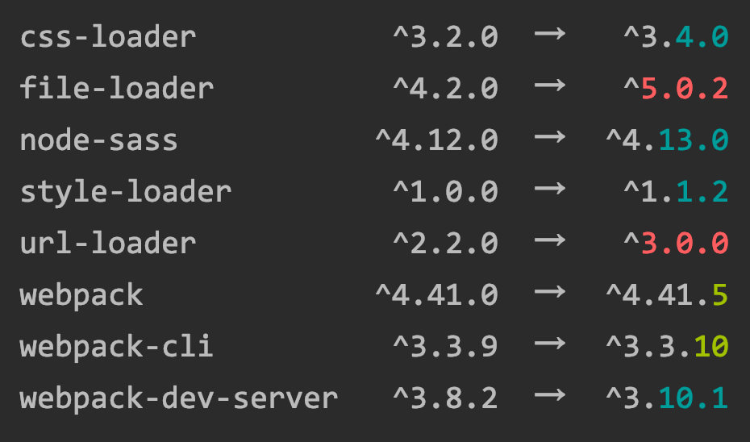
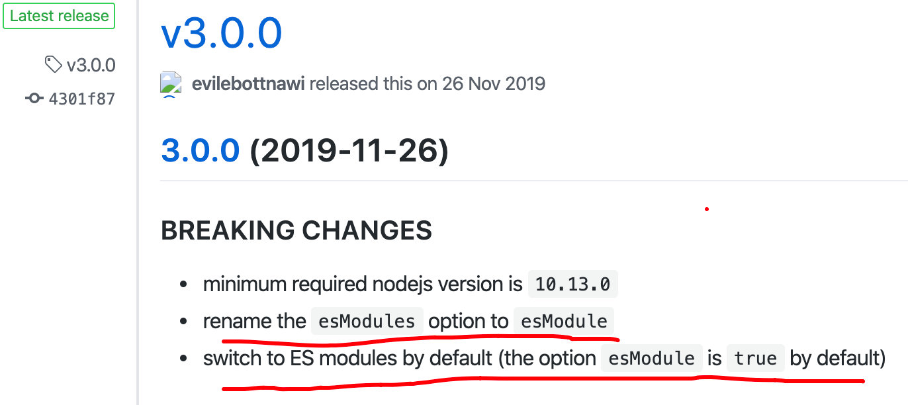

@(工作笔记)
webpack-record
[TOC]
对babel-transform-runtime，babel-polyfill的一些理解
https://www.jianshu.com/p/7bc7b0fadfc2
babel-polyfill babel-polyfill则是通过改写全局prototype的方式实现，比较适合单独运行的项目。 开启babel-polyfill的方式，可以直接在代码中require，或者在webpack的entry中添加，也可以在babel的env中设置useBuildins为true来开启。 但是babel-polyfill会有近100K， 打包后代码冗余量比较大， 对于现代的浏览器,有些不需要polyfill，造成流量浪费
npm install --prefix client # 左边的命令 在哪个目录上执行的意思? --prefix
How to npm install to a specified directory?
https://stackoverflow.com/questions/14469515/how-to-npm-install-to-a-specified-directory
webpack中url-loader新版本的坑（变化）
介绍
之前在进行webpack配置练习过程中遇到了一个坑，花了2个小时才搞定，挺有感触，以记之。
webpack有几个核心概念，其中一个是loader。
loader其实就是用于对模块的源代码进行转换，如TypeScript转换为 JavaScript，sass转成css等，就要安装相对应的 loader。
其中有几个常用的loader如下：
- 处理图片、字体等文件
file-loader或者url-loader。（file-loader可以对图片、字体等文件进行打包，url-loader是基于file-loader进行的一层封装，可以将限制在大小以内的图片文件转成base64格式，减少图片请求） - 处理vue文件
vue-loader（详见vue-loader文档） - 处理css文件
css-loader、style-loader - 处理scss文件
sass-loader、node-sass - 处理vue文件里的style
vue-style-loader - css预处理
postcss-loader - …
url-loader新版本的坑
我把将图片和字体资源放进项目，根据webpack的官方文档介绍安装了file-loader和url-loader，进行配置并加载，此时出问题了。
通过file-loader加载的字体正常，而通过url-loader加载的图片却出不来。
image-20200101214727561
开始以为是配置出的错误，经过反复的尝试修改，结果一无所获。
于是去网上找了一个别人的webpack相关项目拉下来运行，但很奇怪的是， url-loader相关的配置，大家基本都差不多按文档来的，那为啥别人的图片就能运行成功，到我这里就加载失败了？
解决过程
经过反复的比对分析，一点点排除错误因素，终于找到了问题所在——url-loader版本问题。
通过npm-check-updates，我检查到package.json里面的版本变化：
image-20200101221638094
这里面最大的变化就是file-loader和url-loader，是一个大版本的更新。
但是项目中字体解析正常，那么问题很可能就出在url-loader上。
于是我去github上查看url-loader的更新日志，看看都更新了什么，结果看到了这个：
image-20200101222340289
翻译过来就是：
- 最低要求的nodejs版本是10.13.0
- 将esModules选项重命名为esModule
- 默认情况下切换到ES模块（默认情况下，esModule选项为true）
那么一切就水落石出了：最新版本的 url-loader 添加了一个新的配置选择 esModule。
如果不设置 esModule 为 false，那么默认它会将图片导出一个module对象，而不是一个url路径，所以此时页面图片当然加载不出来了。
COPY// index.js
// 入口文件 引入图片和logo
const happy = require('./happy.jpg')
const logo = require('./logo.png')
// 注: url-loader在3.0.0版本有重大改变
// 需在webpack.config.js里添加 esModule: false
// 否则打印出来的happy是个module对象，不是一个url路径
console.log(happy)
// webpack.config.js
rules: [
{
// 加载图片
test: /\.(png|jpg|gif|svg)$/,
use: [
{
loader: 'url-loader',
options: {
limit: 5 * 1024,
name: 'images/[name].[ext]',
// 如果要在图片的src里使用，这里要添加esModule属性，默认是true，需要设置成false
esModule: false
}
}
]
}
]
注：而关于url-loader最近的这次更新，webpack中文文档上面并没有同步更新，仍然只有以前的三个options配置选项，我去翻英文文档，才发现它更新了。
总结
- 不仅仅是webpack，许多项目的中文文档都不是及时更新的，有一定的滞后性，要习惯看英文文档，看英文文档，看英文文档！！！
- 爬坑的过程，也是快速深入学习的过程，爬完之后对webpack相关配置理解了很多。
css-loader导致vue中样式失效
原因
css-loader4.0`后默认对`esModule`设置的是`true
vue-style-loader 4.1.2默认接收的是commonjs的结果，也就是默认接收的是“css-loader中esModule设置的是false的结果”，所以一个配置的是true，一个接收的是false，最终就不会显示样式了。
解决
- 在项目的
vue.config.js中对css的esModule改成false
module.exports = {
...
css: {
...
esModule: false
}
...
}
- 修改webpack的配置文件，
css-loader模块设置添加esModule: false
module: {
rules: [
{
test: /\.css$/i,
use: [
{
loader: 'css-loader',
options: { esModule: false } // 添加这个
}
]
}
]
}